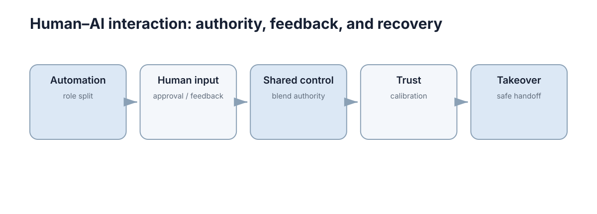

Human–AI Interaction
这一节处理一个工程上最容易被推迟、却最难补救的问题：当自动系统与人共同行动时，控制权、信任和恢复路径该如何设计。

五章不是五个独立话题，而是同一条主线上的五个环节。概念地图里的节点恰好标记了这条主线：Automation（role split）→ Human input（approval / feedback）→ Shared control（blend authority）→ Trust（calibration）→ Takeover（safe handoff）。前半部分决定“谁负责什么”，中间决定“人的输入如何进入闭环”，最后决定“出问题时如何把控制权安全地交还”。
本节要解决的问题
人机系统失败的原因很少是“算法不够强”，而更常见的是一组职责与状态问题。这些问题在开发阶段往往不显现，只有在长时监督、场景突变或故障叠加时才集中暴露，因此越晚处理代价越高。
| 典型问题 | 本质 | 对应章节 |
|---|---|---|
| 双方都以为对方在控制 | 控制权状态不明确 | Interaction & Levels of Automation |
| 确认按钮形同虚设 | 人的反馈没有改变系统行为 | Human-in-the-Loop |
| 人和机器持续对抗 | 融合规则不可预测 | Shared Autonomy |
| 用户过度信任或完全弃用 | 信任未校准 | Trust & Explainability |
| 接管请求发出但来不及响应 | 时序预算不足 | Intervention & Takeover |
这张表可以直接当作评审清单：如果这五类问题中的任何一类在当前系统里没有明确答案，那么它还没有被设计过。
从量化角度看，人机环节的失败成本并不只由事故概率决定，还由人是否能在关键时刻介入决定：
其中 \(p_{\text{fail}}\) 是系统自身出错概率，\(L\) 是单次后果量级，\(p_{\text{human}}\) 是人能够成功拦截的概率。改善人机设计本质上就是在把 \(p_{\text{human}}\) 从接近零提升到可观的水平。
| 问题 | 典型后果 | 量级特征 |
|---|---|---|
| 控制权不明 | 指令冲突、动作不可预测 | 低频但后果重 |
| 反馈不生效 | 人的努力被浪费 | 高频但后果轻 |
| 融合不可预测 | 长期人机对抗 | 持续消耗注意力 |
| 信任失准 | 该拦不拦或完全弃用 | 两端都危险 |
| 接管过早/过晚 | 来不及响应或告警疲劳 | 与时间预算强相关 |
五章的推进逻辑
五章不是并列的知识点，而是有依赖顺序的一条链路。缺掉前面的环节，后面的章节会失去可讨论的前提。
| 章 | 主题 | 回答的问题 | 关键输出 |
|---|---|---|---|
| 01 | 自动化与职责划分 | 谁观察、谁决定、谁执行、谁否决 | 功能级的责任矩阵 |
| 02 | 人在环 | 人插在哪一环、反馈如何生效 | 介入点与人力预算 |
| 03 | 共享自主 | 控制权如何连续融合 | 权重调度规则与权限分层 |
| 04 | 信任与可解释性 | 人如何正确判断系统 | 可操作解释与校准度量 |
| 05 | 干预与接管 | 控制权如何安全交还 | 接管协议与时间预算 |
顺序上有依赖：职责划分不清时讨论融合规则没有意义；信任未校准时，接管请求会被忽略或过度响应。
可以用一句话概括依赖方向的传递关系：
| 前置环节 | 缺失时的表现 | 直接受害者 |
|---|---|---|
| 责任矩阵 | 融合规则无归属 | 03 共享自主 |
| 介入点定义 | 反馈写入无处生效 | 02 人在环 |
| 融合可预测性 | 解释无法自洽 | 04 信任 |
| 信任校准 | 接管请求被忽略 | 05 接管 |
| 接管协议 | 责任与恢复脱节 | 01 责任重定义 |
因此阅读顺序建议从 01 开始，即使研究方向偏向接管或信任，也值得先确认责任划分是否已经明确。
概念地图
概念地图给出的五个节点不是分类标签，而是一条链上的五个状态。理解它们的连接方式，比记住节点名称更重要。
| 节点 | 含义 | 工程落点 |
|---|---|---|
| Automation（role split） | 自动化是职责划分，不是等级排名 | 每项功能单独定义责任 |
| Human input（approval / feedback） | 人的输入必须改变后续行为 | 反馈路径要能写入规则、案例或训练集 |
| Shared control（blend authority） | 控制权随场景连续变化 | \(\alpha\) 调度规则、变化限速 |
| Trust（calibration） | 信任要与系统真实能力匹配 | 展示限制、度量校准误差 |
| Takeover（safe handoff） | 接管是有时序的协议 | 告警阈值、交接清单、恢复判据 |
值得注意的是这张图是一条链而不是一个环：从职责划分出发，最终落到安全交还。这提示了设计顺序——先定责任，再定交互，最后定应急。
链上每一个环节都可以用一个标量描述其“强度”，最典型的是共享控制中的融合权重：
当 \(\alpha\) 的设计与责任矩阵不一致时（例如系统仍保留否决权，但 \(\alpha\) 表明人已完全接管），链上就会出现断裂，表现为“看起来能控制、实际控制无效”。
| 链上环节 | 可用标量刻画 | 断裂表现 |
|---|---|---|
| 职责划分 | 每项功能的权限向量 | 权限重叠或真空 |
| 人的输入 | 反馈生效比例 | 输入被静默丢弃 |
| 共享控制 | 融合权重 \(\alpha\) | 权重与权限矛盾 |
| 信任 | 校准误差 | 该拦不拦 |
| 接管 | 时间裕量 | 请求过晚 |
控制权、信任与恢复的量化关系
这一节的四类设计问题都可以写成显式的量，便于验收而不是靠主观判断。最常用的是共享控制权重、人力利用率、信任校准误差与接管裕量。
共享控制的权重调度应满足有界变化率，否则会出现前后不一致的操控感：
人力是否可持续，取决于请求到达率 \(\lambda\) 与平均处理时间 \(\tau\) 的乘积：
当 \(\rho \to 1\) 时队列发散，人开始机械确认；这正是“确认按钮形同虚设”的定量解释。
信任是否校准则可写成预测与真实能力之间的偏差：
其中 \(\hat{p}_{\text{succ}}\) 是人对系统成功率的判断，\(p_{\text{succ}}\) 是真实成功率。\(e_{\text{trust}} > 0\) 表示过度信任，\(e_{\text{trust}} < 0\) 表示过度怀疑。
接管能否安全，则取决于时间裕量：
| 量 | 符号 | 含义 | 目标方向 |
|---|---|---|---|
| 融合权重 | \(\alpha\) | 人的输入占比 | 与权限一致 |
| 变化率上限 | \(\alpha_{\max}'\) | 权重相对时间的变化 | 防止操控突变 |
| 人力利用率 | \(\rho\) | 请求率与处理时间乘积 | \(\le 0.6\) |
| 信任校准误差 | \(e_{\text{trust}}\) | 主观与真实成功率之差 | 趋近 0 |
| 接管时间裕量 | \(M\) | 安全窗口减恢复时间 | \(> 0\) |
这四个量之间并不独立：提高 \(\alpha\) 会降低 \(p_{\text{succ}}\) 对自动系统的依赖，却同时抬高 \(\rho\)；过度解释会降低 \(e_{\text{trust}}\)，但增加信息量可能拖长理解时间从而压缩 \(M\)。设计就是在这些约束之间取平衡，而不是分别优化。
与其他章节的接口
人机交互不只在界面层，它直接约束运行时安全、通信时延与控制平滑性。下面列出最容易发生接口错配的位置。
| 本节概念 | 对接章节 | 解决什么 |
|---|---|---|
| 控制权状态机 | Safe Learning & Runtime Safety | 运行时降级与状态切换 |
| 接管时间预算 | Safety Constraints | 安全余量中的延迟项 |
| 告警与人工确认 | Distributed Systems | 通信延迟决定告警及时性 |
| 解释所需的置信度 | Robustness & Safety | 校准与不确定性表达 |
| 切换瞬态与平滑 | Navigation & Control | 控制权转移的执行侧平滑 |
| 任务分配给人还是机器 | Multi-Agent Systems | 分配问题的形式化视角 |
接口错配最常见的形式是“语义不一致”：界面说“已接管”，而运行时状态机仍处于自动模式，或者通信延迟使告警到达时刻晚于安全窗口。
可以用一个简单的接口一致性条件来检查：
即通信与界面呈现带来的额外时延必须小于可用告警窗口，否则再正确的策略也无法在时间上成立。
| 错配类型 | 表现 | 修复方向 |
|---|---|---|
| 语义不一致 | 界面与状态机不同步 | 统一状态定义与来源 |
| 时延过大 | 告警到达即已越界 | 压缩 \(t_{\text{comm}}\) 或提前预测 |
| 职责边界模糊 | 双方同时下发指令 | 明确唯一控制源 |
| 解释与实际不符 | 人按错误假设操作 | 用真实置信度驱动解释 |
人机系统的常见失败模式
失败很少以“算法精度下降”的形式出现，更多是职责、状态与负荷问题。下面这张表可以直接用于上机前的自查。
| 现象 | 根本原因 | 排查方向 |
|---|---|---|
| 操作者未察觉模式已变 | 模式状态非持续可见 | 检查模式提示与切换日志 |
| 告警被机械确认 | 请求速率超过人力 | 计算 \(\rho=\lambda\tau\) |
| 人机对抗持续存在 | 融合规则不可预测 | 检查辅助规则一致性 |
| 接管请求后系统更危险 | 交接信息不足 | 检查必需状态清单覆盖率 |
| 长期无事故后突然失控 | 监督负荷与信任漂移 | 检查演练频率与告警分级 |
这些失败模式的共同点是：它们都不能靠单模块的单元测试发现，只有把人放进闭环并施加时间压力才会浮现。因此排查顺序应是先确认状态可见性，再确认反馈是否生效，之后才是融合规则与信息量。
| 排查顺序 | 检查项 | 通过判据 |
|---|---|---|
| 1 | 控制权是否唯一且可见 | 陌生评审者能说出谁在控制 |
| 2 | 反馈是否改变行为 | 人为修正后行为可复现地改变 |
| 3 | 融合是否可预测 | 相同场景下 \(\alpha\) 轨迹一致 |
| 4 | 信任是否校准 | \(e_{\text{trust}}\) 在容差内 |
| 5 | 接管是否及时 | \(M > 0\) 且演练覆盖无人响应 |
把这几项检查固定成上机前的清单，可以避免团队在集成阶段才第一次讨论控制权归属。 值得注意的是，失败模式之间会相互放大：负荷过高会加速信任漂移，信任漂移又会让告警被忽略，最终使接管失效。 因此排查不应止步于定位单个现象，而要沿着“状态可见性 → 反馈生效 → 融合可预测 → 信任校准 → 接管及时”的顺序逐项确认。 如果某一环的判据无法给出，就说明这一环尚未被真正设计过。
验收视角：人机系统如何被测试
与算法模块不同，人机系统不能只用精度指标验收。可用的最小验收集合是行为层面的：它要求系统在时间压力与信息不足下仍然表现可接受。
| 维度 | 测量方式 | 通过标准 |
|---|---|---|
| 责任清晰度 | 陌生评审者回答“谁在控制” | 100% 正确 |
| 反馈闭环 | 人为修正后行为是否改变 | 可复现地改变 |
| 人力可持续性 | 告警利用率与排队长度 | 利用率 \(\le 0.6\) |
| 信任校准 | 系统错时能否被拦截 | 拦截率显著高于随机 |
| 接管时序 | 告警到可控状态的时间 | 小于安全窗口 |
这些维度必须组合使用：只看接管时序会忽略人的负荷，只看负荷会忽略信任失准。一个可操作的验收流程是先跑责任清晰度与反馈闭环这类静态检查，再用演练注入时间压力验证后三项。
| 验收阶段 | 手段 | 失败即说明 |
|---|---|---|
| 桌面评审 | 责任矩阵与状态图走查 | 职责未定义 |
| 静态闭环 | 人为介入实验 | 反馈路径不通 |
| 压力演练 | 注入故障与延迟 | 时序或负荷不足 |
| 长期观察 | 接管率与告警噪声统计 | 阈值或信任漂移 |
验收数据应同时记录成功与失败两类样本，否则通过率会被容易复现的场景主导，掩盖真正困难的分支。 尤其重要的是保留“人未及时响应”的分支结果，它是判断系统是否把安全责任错误地转移给人的唯一依据。 最后，验收标准应写进需求文档而不是测试脚本的注释里，这样它与责任矩阵、时间预算一起构成可追溯的设计约束。 只有在这样的约束下，人机系统的“可用”才是可验证的，而不是事后解释出来的。
下一步：从 Interaction & Levels of Automation 开始，它把“自动化程度”还原成可写进文档的职责矩阵；随后 Human-in-the-Loop 与 Shared Autonomy 处理人的输入如何进入闭环，Trust & Explainability 与 Intervention & Takeover 处理理解与安全交还。